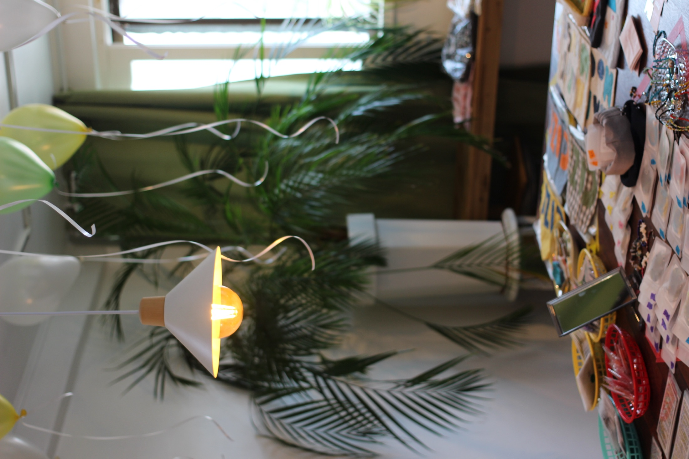
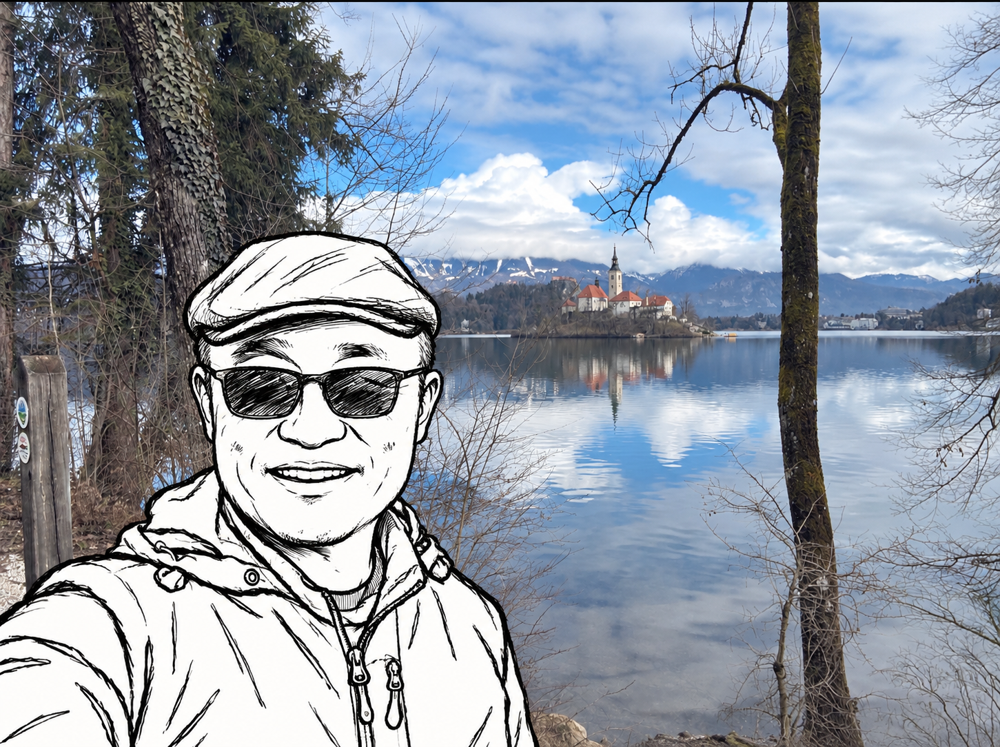
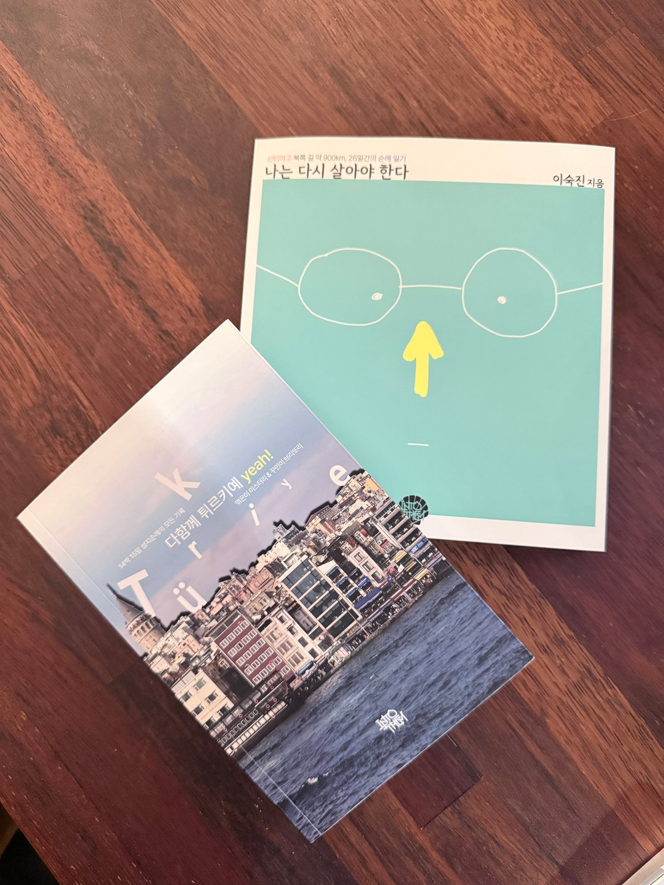
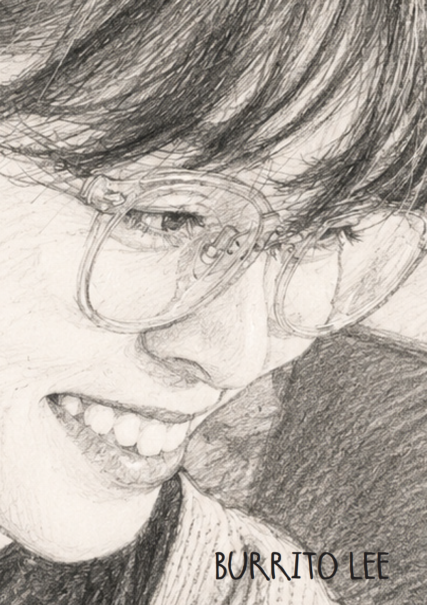
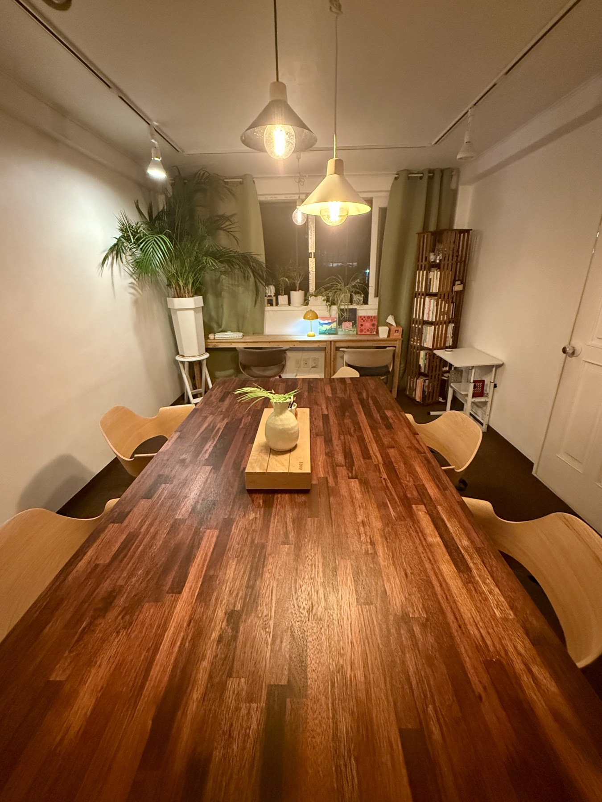
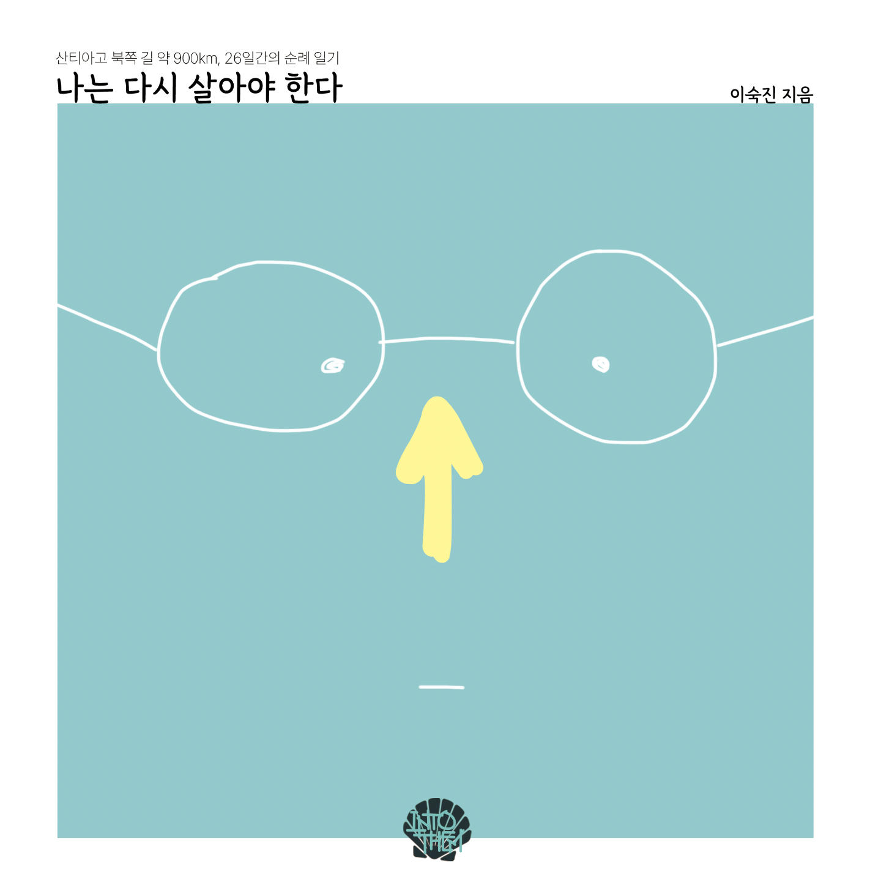

A PLACE TO PAUSE
AND BEGIN AGAIN

INTOTHEM TODAY NO. 01 · 2026. 11. 인투뎀투데이 THIS WEEK / 이번 주의 표지 히브리서 매일묵상을 시작합니다 인투뎀 투데이 읽기
WELCOME TO INTOTHEM
인투뎀은 사람을 만나고, 이야기를 듣고, 함께 성장하는 공간입니다.
상담과 모임, 출판을 통해 평범하지만 소중한 삶의 이야기를 기록하고 연결합니다.
TODAY'S WRITING
오늘의 글
사랑과 고통은 동전의 양면 같습니다.
사랑이 아름다운 꽃밭 같지만
그 땅 아래는 그렇게 향기롭지 않습니다.
썩어짐이 있어야 꽃을 피워내는
그 과정을 피할 수 없습니다.
꽃병의 꽃은 며칠을 견뎌내지 못하고
물 없이 보존되는 꽃에는 생명이 없습니다.
화려한 꽃만 보고 싶고 향기만 맡고 싶은데
그런 건 존재하지 않습니다.
사랑은 고통의 다른 이름 같습니다.
사랑을 포기할 수 있나요?
아니요. 그건 포기되는 것이 아닙니다.
생명이 꺼지는 순간에도 사라지지 않는 것이
사랑이기에 외면하기를 선택하면 할수록
또 다른 고통이 더해질 뿐입니다.
용기 내어 사랑의 길을 가 봅시다.
고통이 만들어 내는 꽃과 열매로
더 많은 생명들이 살아가게 되는 질서에
순응하며 살아가 봅시다.
고통이 감사가 되어
내 안에도 꽃이 피어날 테니…
CHOOSE YOUR PATH
지금, 당신에게
필요한 자리로.

INTOTHEM
BOOKS
이야기를 한 권의 책으로 만드는 자리
책 만나기 ↗
INTOTHEM
COUNSELING
마음을 들여다 보는 상담의 자리
상담 예약하기 ↗
INTOTHEM
PLACE
함께 만나고 배우는 자리
프로그램 보기 ↗NOW AT INTOTHEM
지금 이곳에서는
INTOTHEM BOOKS
모든 책 보기 →책 구매를 원하시면 카카오 오픈채팅으로 문의해주세요.
책 구매 문의 →
NOW ON SALE · 18,000원
나는 다시
살아야 한다
26일 동안 약 900km의 산티아고 북쪽 길을 걸으며 기록한 사진 에세이입니다.책 소개 보기 →PUBLISHED
PHOTO · LETÍCIA ALVARES / PEXELS